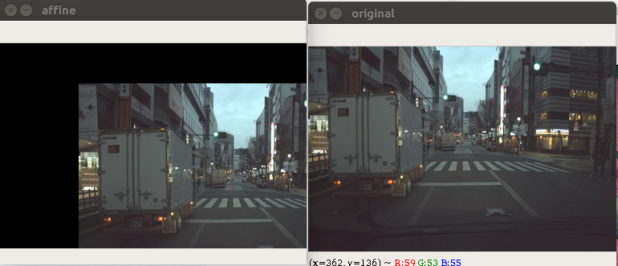
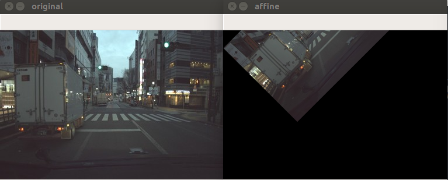
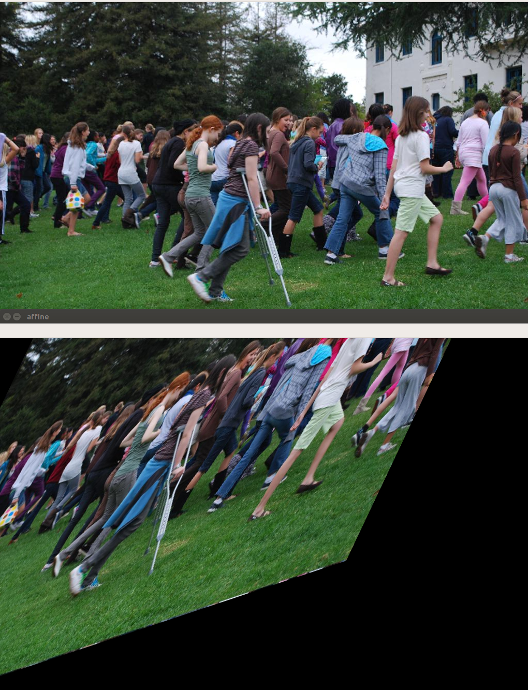

FOTS和ROIRotate以及仿射变换
本文介绍 FOTS和ROIRotate以及仿射变换
FOTS和ROIRotate以及仿射变换
This article was original written by Jin Tian, welcome re-post, first come with https://jinfagang.github.io . but please keep this copyright info, thanks, any question could be asked via wechat:
jintianiloveu
FOTS是一个速度比较快，同时是一个端到端的文本检测方法，这个方法有一些东西值得学习，这也是写这篇文章的原因。通常我们实现一个文本检测器应该需要定位和识别两步，比如用CTPN定位，用CRNN识别，但是他们的速度都太慢了，二FOTS几乎做到实时。
除了端到端这个优点之外，FOTS还提出了一个很好的思想，即是ROIRotate，这对于如何采用ROI来回归带旋转角度的框提供了一些思考和价值。在开始之前，需要向大家介绍一下仿射变换。
仿射变换(Affine Transform)
其实这个大家并不陌生，但是要从原理上理解不容易。说白了，仿射变换就是一种线到线或者平面到平面的不改变其平面特性的变换，比如你是平行的线，仿射变换之后还是平行的。
我们尝试将一张图片来进行仿射变换，因为它本身是一个矩形，我们可以看看这个矩形像素区域经过仿射变换之后会变成什么？

这个仿射变换可以用下面的代码来轻松得到：
|
|
请注意这里的核心是我们的矩阵M。这个矩阵描述的就是仿射变换的方式。
上面这个矩阵的意思是，x移动100，y移动50，实际上就是一个最简单的仿射变换形式。那我们再来复杂一点的，我们将来开始缩放了。
实际上opencv里面有一个函数很有用，比如我们要在坐标(30, 30)的位置，顺时针旋转45度，我如何才能计算出这个需要的旋转矩阵呢？简单：
M = cv2.getRotationMatrix2D((30, 30), 45, 1)
这个函数最后一个代表是缩放，我们尝试一下：

|
|
那很显然，我们在（30， 30）这个位置进行了旋转，但好像默认方向是逆时针。同时对图片进行了0.7倍的缩放。
好了，想必大家对于仿射变换的理解已经超越我了，那我们再来难度加大一点的，我们将进行错切。等等，你说的平移、缩放、旋转都能理解，错切是什么东西？
并不陌生，那种带有很多平行四边形的晾衣架见过么？你把它扭动一下这个操作就叫做错切。但是错切有什么用呢？错切最大的用途应该就是透视了，还记得小时候画画学画屋顶吗？怎么才能让屋顶具有3D感？那不就是利用透视和错切吗？
那用到文本检测又有啥用呢？现实中很多文字都是要通过透视才能精准的扣出它的位置的，此时错切就用得上了。好废话说了那么多，错切长啥样？
实际上opencv里面也提供了这么一个函数来拿到我们需要错切变换矩阵，在opencv了里面就叫做affineTransform：
M=cv2.getAffineTransform(pts1, pts2)
这里我们给出两个位置，每个位置三个点，就可以唯一确定一个仿射变换，这里必须要明白一个原理，那就是仿射变换在两对三个点之间是唯一确定的。

|
|
实际上这就是仿射变换。同样的道理，我们通过一个错切的图片，可以通过矫正，将其转换到正常的图片，比如我们从一张图片抠出来了照片拍出来的放映的PPT，此时PPT是错切的，通过放射变换，可以将这个区域矫正为正的格式。
通过opencv里面的透视变换可以反过来将不规则的四边形纠正为正的四边形。此时需要四个点进行纠正，我们在这里暂且不谈，感兴趣的便宜可以做一些尝试，示例代码：
|
|
话说回来，那么接下来需要做什么事情呢？当然啦，今日的主角是FOTS。
FOTS快速的文本检测方法
- 原文作者：金天
- 原文链接：https://jintian93.github.io/post/2019_09_12_11_FOTS%E5%92%8CROIRotate%E4%BB%A5%E5%8F%8A%E4%BB%BF%E5%B0%84%E5%8F%98%E6%8D%A2/
- 版权声明：本作品采用知识共享署名-非商业性使用-禁止演绎 4.0 国际许可协议进行许可，非商业转载请注明出处（作者，原文链接），商业转载请联系作者获得授权。